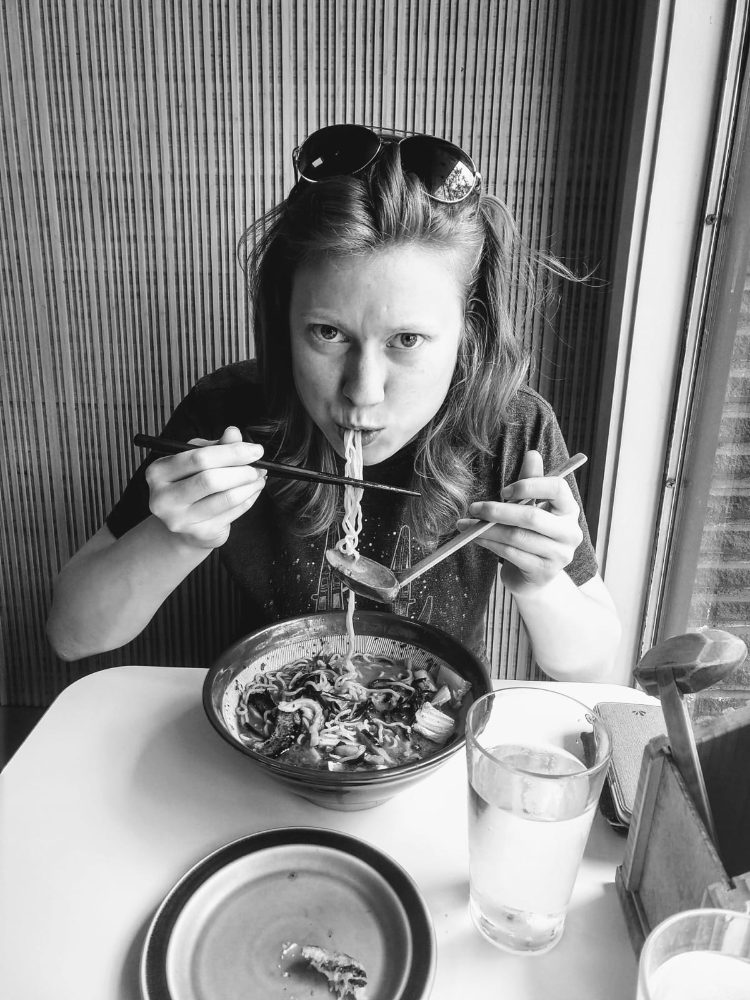

An app where users can login and store unique information on their day-to-day activities, exercises, stressors, and anxiety level.
Built with EJS, Express, Mongoose, NodeJS, Bootstrap
Hi there,
I'm Molly. I'm an art nerd and former retoucher-turned-developer. My passion is problem solving, and I love to code. I want to combine my visual and digital worlds and help turn visions into reality. Contact me, I'd love to help.
When I'm not coding, I'm stuffing my face with delicious treats (this picture is proof). Otherwise, I enjoy gaming (can't wait to play Cyberpunk 2077 and Baldur's Gate III), reading, and the occasional embroidery project.

Skills
-JavaScript
-jQuery
-HTML5
-CSS3
-Ruby
-Ruby on Rails
-NodeJS
-Git
-Github
-ReactJS
-AngularJS
-PostgresSQL
-MongoDB
-Photoshop CC 2018
Experience
Blueport Commerce, Senior Digital Imaging Specialist - Mar/2017 - Feb/2019
Specialized in image silhouetting, pathing, manipulation, and color correction to match products and real life samples; employed deep knowledge of proper color management in imaging workflow and knowledge of furniture products, features, and construction for optimal product image processing.
Managed Imaging Department processes and standards, including: conducting regular meetings, disseminating imaging standards, shepherding client updates, peer reviews, mentoring, and team trainings.
Spearheaded process improvements and increased workflow efficiency; overhauled imaging workflow by implementing automated processes, actions, and scripts for Photoshop; investigated product presentation improvements to ensure that clients were equipped with competitive e-commerce furniture image standards.
Sole lead on multiple projects designed to drive online sales, improve workflow, or build out products quicker; oversaw imaging portion of an initiative to build client products faster, entitled Automated Product Build. Employed cross-departmental collaboration to get image automation built; worked with and performed trainings for clients on APB; integral to faster product creation and on-site availability.
Blueport Commerce, Digital Imaging Specialist - June/2013 - Mar/2017
Scrutinized and retouched images in a fast-paced, high-volume, furniture e-commerce imaging department; managed and developed highest imaging standards for client accounts; conducted peer evaluation of imaging work to ensure high quality and consistency; audited proper file storage and organization using digital asset management system; trained new employees in workflow and imaging standards.
Molly Stone Illustration, Freelance Illustrator - June/2011 - June/2013
Produced illustrations under tight deadlines with quick turnaround.
Advised clients with creative recommendations to help them fully realize goals. Achieved the creative needs of clients with visual problem solving.
Consulted closely with clients to ensure creative parameters were fully met at every step and ensured all ideas, drafts, changes, and feedback were fully communicated to the client.
Education
General Assembly
Certificate, Software Engineering and Web Development
Massachusetts College of Art and Design
Bachelor of Fine Arts - Illustration with focus on commercial art